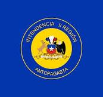
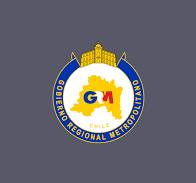

Day 6: Exploring Chile
Introduction to Chile
Chile is a long and narrow country that stretches along the western edge of South America. It is known for its diverse landscapes, including deserts, mountains, and a stunning coastline. The capital city is Santiago, a bustling metropolis with a mix of modern and historical sites.
This image showcases Chile's breathtaking natural scenery, from the towering Andes to the expansive coastlines.
Chile’s landscape is one of the most varied in the world. You can find everything from arid deserts to lush forests within its borders.
Because of its unique shape, Chile has a coastline that stretches for thousands of miles, making it a paradise for those who love the ocean.
Many visitors are drawn to Chile not just for its natural beauty, but also for the rich culture and history that can be found in cities like Santiago.
Big Cities
Besides Santiago, Chile is home to other major cities like Valparaíso, known for its colorful houses and vibrant arts scene, and Concepción, an important cultural and educational center. Each city in Chile offers a unique experience, blending history with modern living.

This image shows the colorful houses of Valparaíso, a city famous for its steep hills and vibrant street art.
Valparaíso is often called the "Jewel of the Pacific" because of its stunning views of the ocean and unique architecture.
Walking through the streets of Valparaíso feels like stepping into an open-air museum, with murals and street art decorating nearly every corner.
Visitors love to explore the city's winding streets and discover hidden cafes, shops, and galleries.
This image shows Concepción, a city that is a hub for culture and education in Chile.
Concepción is known for its universities and vibrant student life, making it an important center for learning in the country.
The city has a rich cultural scene, with many theaters, museums, and music venues where you can experience Chilean culture firsthand.
Concepción also played a key role in Chile's history and independence, making it a city with both cultural and historical significance.
Natural Beauty
Chile is renowned for its stunning natural landscapes. The Atacama Desert in the north is one of the driest places on Earth, offering a surreal, otherworldly landscape. The Andes Mountains run along the eastern border, providing a dramatic backdrop to the country. On Easter Island, you can find the mysterious Moai statues, which have puzzled and fascinated visitors for centuries.

This image captures the vast, barren beauty of the Atacama Desert, the driest desert in the world.
The Atacama Desert is known for its unique landscapes, including salt flats, hot springs, and geysers.
Despite its dryness, the desert is home to a surprising variety of life, including flamingos and other wildlife that thrive in this harsh environment.
Many people visit the Atacama Desert to experience its otherworldly landscapes and to stargaze, as it is one of the best places on Earth to see the night sky.

This image shows the majestic Andes Mountains, which run the length of Chile's eastern border.
The Andes are the longest mountain range in the world, and they create stunning landscapes throughout Chile.
The mountains are home to a wide range of wildlife and are a popular destination for outdoor activities like hiking and skiing.
In Chile, the Andes Mountains are not just a natural wonder but also a vital part of the country's culture and history.

This image shows the mysterious Moai statues on Easter Island, a remote island in the Pacific Ocean that is part of Chile.
The Moai statues were carved by the Rapa Nui people between the 13th and 16th centuries, and they are still shrouded in mystery.
Easter Island is one of the most remote inhabited places in the world, and its unique culture and history attract visitors from all over.
People are fascinated by the Moai statues, which stand as silent sentinels on the island, watching over the land and sea.
People and Languages
The people of Chile primarily speak Spanish. Chileans are known for their warm hospitality and love of good food, music, and festivals. Traditional music includes the cueca, and popular dishes include empanadas and asado, a type of barbecue.
This image shows Chileans dancing the cueca, the national dance of Chile, which is often performed during festivals.
The cueca is a lively and spirited dance that represents the flirtatious courtship between a rooster and a hen.
During national celebrations, such as Fiestas Patrias, you will see people all over Chile dancing the cueca and enjoying traditional music.
Chilean culture is rich and diverse, with influences from indigenous peoples, Spanish settlers, and other immigrant communities.
Famous Chileans
Chile has produced many notable figures, including Pablo Neruda, a Nobel Prize-winning poet whose works have been celebrated worldwide. Another prominent figure is Michelle Bachelet, who served as Chile's president and was the first woman to hold that office in the country.
This image shows Pablo Neruda, one of Chile's most famous poets, who won the Nobel Prize for Literature in 1971.
Neruda's poetry is known for its powerful emotions and beautiful imagery, often reflecting his love for Chile and its people.
His works have been translated into many languages, making him one of the most widely read poets in the world.
Neruda's legacy continues to inspire poets, writers, and readers around the globe.
This image shows Michelle Bachelet, the first woman to serve as president of Chile. She held the office twice, from 2006 to 2010 and from 2014 to 2018.
Bachelet is known for her work on social issues, including healthcare reform and women's rights.
Before becoming president, she was a pediatrician and public health expert, and she also served as the head of UN Women, a United Nations organization dedicated to gender equality.
Michelle Bachelet remains an influential figure in Chilean and global politics, advocating for human rights and social justice.
Regions, Their Flags, and Capital Cities in Chile
| Region | Flag | Capital City |
|---|---|---|
| Antofagasta |  | Antofagasta |
| Valparaíso |  |
Valparaíso |
| Biobío | Concepción | |
| Metropolitan Region |  | Santiago |
Did You Know?
Did you know that Chile is the longest north-south trending country in the world, stretching over 4,300 kilometers?
Did you know that the Atacama Desert in Chile is the driest non-polar desert on Earth?
Did you know that Chile is home to over 2,000 volcanoes, many of which are still active?
Did you know that Easter Island, known for its Moai statues, is one of the most remote inhabited islands in the world?
Did you know that Chile's wine country is famous for its high-quality wines, particularly the Carmenere variety?